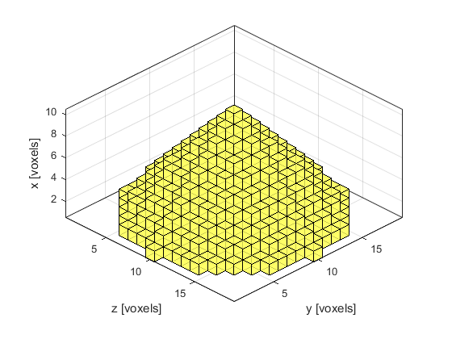
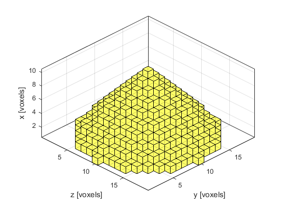

revolve2D
Form 3D matrix from revolution of 2D matrix.
Syntax
mat3D = revolve2D(mat2D)
Description
revolve2D revolves the values of a 2D matrix about the x axis (or matrix rows) to form a 3D matrix. A single point is taken as the x-axis origin, thus for an input matrix of size m by n, the output matrix will be m by (2n-1) by (2n-1). Values outside the interpolation range are set to zero. An example of revolving a 2D triangle is shown below.
% create a triangle in a 2D grid triangle = tril(ones(10, 10)); % rotate in 3D triangle_3D = revolve2D(triangle); % plot the revolved triangle voxelPlot(triangle_3D); camup([0, -1, 0]);
 

Inputs
mat2D |
2D input matrix |
Outputs
mat3D |
3D output matrix |
See Also
interp1